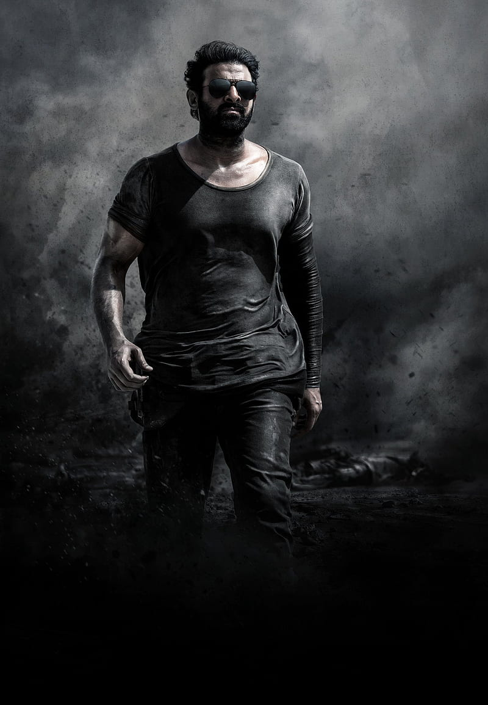

One bright morning as the Fox was following his sharp nose through the wood in search of a bite to eat, he saw a Crow on the limb of a tree overhead. This was by no means the first Crow the Fox had ever seen. What caught his attention this time and made him stop for a second look, was that the lucky Crow held a bit of cheese in her beak. "No need to search any farther," thought sly Master Fox. "Here is a dainty bite for my breakfast." Up he trotted to the foot of the tree in which the Crow was sitting, and looking up admiringly, he cried, "Good-morning, beautiful creature!" The Crow, her head cocked on one side, watched the Fox suspiciously. But she kept her beak tightly closed on the cheese and did not return his greeting. "What a charming creature she is!" said the Fox. "How her feathers shine! What a beautiful form and what splendid wings! Such a wonderful Bird should have a very lovely voice, since everything else about her is so perfect. Could she sing just one song, I know I should hail her Queen of Birds." Listening to these flattering words, the Crow forgot all her suspicion, and also her breakfast. She wanted very much to be called Queen of Birds. So she opened her beak wide to utter her loudest caw, and down fell the cheese straight into the Fox's open mouth. "Thank you," said Master Fox sweetly, as he walked off. "Though it is cracked, you have a voice sure enough. But where are your wits?"
A Dove saw an Ant fall into a brook. The Ant struggled in vain to reach the bank, and in pity, the Dove dropped a blade of straw close beside it. Clinging to the straw like a shipwrecked sailor to a broken spar, the Ant floated safely to shore.
Soon after, the Ant saw a man getting ready to kill the Dove with a stone. But just as he cast the stone, the Ant stung him in the heel, so that the pain made him miss his aim, and the startled Dove flew to safety in a distant wood.
